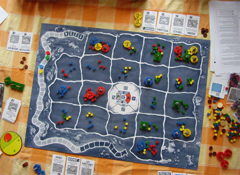

ACME Inc. is doing consulting now. The industry has learnt that ACME is the place to go to for ASCII graphics implementation of board games. Today, an implementation of Doris & Frank’s boardgame Ursuppe is called for.
Since it’s a large project, the clients insist that you phase out development. The first stage will only implement the board and its rendering. The second stage will add the basic game logic, without supporting any of the provided genes, or interactivity. The third and final stage will add genes to the game.
Simplifications:
You may ask for more simplifications, if you run into issues. Send an email to Niko.
For stage 1, ACME only committed to their clients to initialize the Ursuppe board for 3 players. Verify that the board is initialized according to the game rules, and that it is displayed correctly (i.e., the correct number of amebas are on the field: 2 per player, you can place the amebas at random in this stage, all fields have all 6 foodstuff cubes on them, 2 of each color.)
Board and Square classes.When you’re done, tag your solution as ursuppe01 with the -a option on (git tag -a ludo01). Be sure to push with the --tags option so we can see your tag. See man git-push.
After the successful stage 1, your contract was extended. (Luckily, you’re an experienced board game developer by now.) For stage 2, ACME promised the client to deliver a simplified variant of the game. The game shall be played automatically (as opposed to interactively) by three players. The players may not buy genes, and amebas never move, but always drift (the terms are explained in the game rules.).
Player class.Game class that takes the game thru all 6 phases of a round. In phase 1, amebas always drift.shouldRunRandomGame smoke test method that makes three players play (automatically and not interactively). The output shows whose turn it is and the board after every step.When you’re done, tag your solution as ursuppe02. Be sure to push the tag using the --tags option as in stage 1.
In this stage:
When you’re done, tag your solution as ludo03. Be sure to push the tag using the --tags option as in stage 1.
The first stage is due next week on Wednesday, March 30, as usual. The other 2 stages, however, are both due the same day, on May 4, 2011.
Copyright The Ursuppe game, as well as the rules sheet, belong to Doris and Frank. The screenshot of the game is due to Christian Witter.